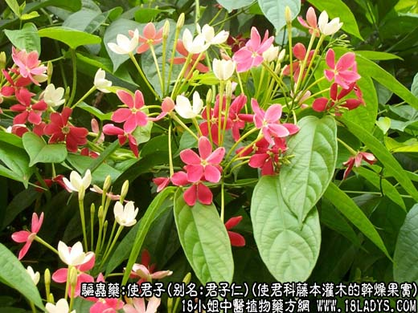
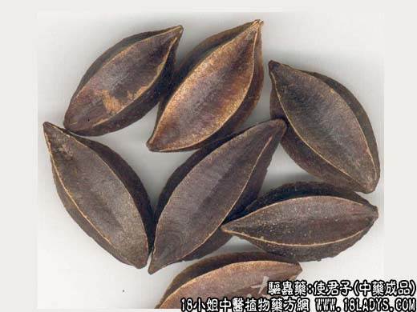
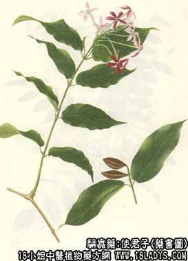

本品为常用中药。始载《开宝本草》。商品有带壳的使君子和去壳的君子仁两种。
来源：为使君科植物藤本灌木使君子的干燥成熟果实（使君子）或种子（君子仁）。多为栽培。
产地：主产于四川、福建、广东、广西、江西等地区。
性状鉴别：使君子呈纺锤形，长2.5～4厘米，直径1.5～2厘米，具5条纵棱，棱间凹陷。果皮茶褐色，坚硬而光滑，稍有光泽。体轻，不易破碎。断切面呈五角形，壳内含有种子一粒（君子仁）。种子纺锤形，显干瘦，多抽皱长1.8～2.6厘米，直径0.6～1厘米。种皮灰白色或黑棕色，质易脆，易剥落。种仁黄白色，肉质。气微香，味香甜美。以个大成熟饱满种子黄白色者为佳。
主要成分：含使君子酸钾。胡芦巴硷、吡啶、脂肪油等。
功效与作用：驱蛔虫：体外试验使君子水浸剂对猪蛔虫头部有麻痹作用。有效成分为使君子酸钾。
炮制：生用。
归经：甘，温。
主治：小儿虫积，疳积，食积，腹胀面黄等症。
临床应用：主要用于驱蛔虫，排虫率约达70%，疗效还不够满意，但因其毒性小，较安全，且味甘可口，小儿喜服，故多用于儿童驱蛔。可单用，或配槟榔同服，放如使槟合剂。又有人驱蛲虫，但疗效比驱蛔虫更差。此外，也可用使君子治疳积，取其有驱虫兼健胃作用。常配胡黄连、芜荑等，方如疳积丸。
使用注意：1、副作用可有呃逆，用其壳煎水饮服可止；多服还可出现眩晕、恶心等反应。
2、生食副作用较大；炒后副作用稍轻。
3、使君子不宜与热药、热茶同服，否则易致腹泻。
用量：入煎剂6～9g。嚼服按年龄，每穗1颗（炒香），总量不超过20颗。空腹服，连服2～3天。
处方举例：使槟合剂：使君子9g，槟榔4.5g，水煎服。